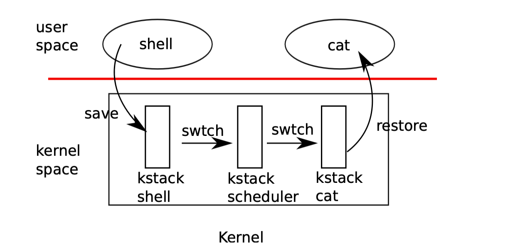

thread
这里主要是将操作系统中 最核心的部分 进程，线程，上下文切换，调度
实验地址
我的实现 还没实现呢
Introduce
在操作系统中 进程是资源分配的基本单位，线程是CPU调度的基本单位
具体的来说， 对于 进程 我们在完成实验的时候，就知道，存在一个 struct proc, 我们是实打实的为每个进程分配了一个 struct proc 的结构体，最主要的就是包含了 页表，里面是存放的是为这个进程分配的所有的物理页的映射关系。而 我们在xv6OS 的实验中是进程和线程是默认1对1 的关系，在下面的 struct proc的定义中也能看出来:
1
2
3
4
5
6
7
8
9
10
11
12
13
14
15
16
17
18
19
20
21
22
23
24
25
26
27
28
29
30
31
32
33
34
35
36
37
38
39
40
41
42
43
44
45
46
47
48
49
50
51
52
53
54
55
56
57
58
59
60
61
62
63
64
65
66
67
68
69
70
71
72
73
74
75
76
77
78
79
80
81
82
83
84
85
86
87
88
89
90
91
92
93
94
95
96
97
98
99
100
101
102
103
104
105
106
107 | // Saved registers for kernel context switches.
struct context {
uint64 ra;
uint64 sp;
// callee-saved
uint64 s0;
uint64 s1;
uint64 s2;
uint64 s3;
uint64 s4;
uint64 s5;
uint64 s6;
uint64 s7;
uint64 s8;
uint64 s9;
uint64 s10;
uint64 s11;
};
// Per-CPU state.
struct cpu {
struct proc *proc; // The process running on this cpu, or null.
struct context context; // swtch() here to enter scheduler().
int noff; // Depth of push_off() nesting.
int intena; // Were interrupts enabled before push_off()?
};
extern struct cpu cpus[NCPU];
// per-process data for the trap handling code in trampoline.S.
// sits in a page by itself just under the trampoline page in the
// user page table. not specially mapped in the kernel page table.
// uservec in trampoline.S saves user registers in the trapframe,
// then initializes registers from the trapframe's
// kernel_sp, kernel_hartid, kernel_satp, and jumps to kernel_trap.
// usertrapret() and userret in trampoline.S set up
// the trapframe's kernel_*, restore user registers from the
// trapframe, switch to the user page table, and enter user space.
// the trapframe includes callee-saved user registers like s0-s11 because the
// return-to-user path via usertrapret() doesn't return through
// the entire kernel call stack.
struct trapframe {
/* 0 */ uint64 kernel_satp; // kernel page table
/* 8 */ uint64 kernel_sp; // top of process's kernel stack
/* 16 */ uint64 kernel_trap; // usertrap()
/* 24 */ uint64 epc; // saved user program counter
/* 32 */ uint64 kernel_hartid; // saved kernel tp
/* 40 */ uint64 ra;
/* 48 */ uint64 sp;
/* 56 */ uint64 gp;
/* 64 */ uint64 tp;
/* 72 */ uint64 t0;
/* 80 */ uint64 t1;
/* 88 */ uint64 t2;
/* 96 */ uint64 s0;
/* 104 */ uint64 s1;
/* 112 */ uint64 a0;
/* 120 */ uint64 a1;
/* 128 */ uint64 a2;
/* 136 */ uint64 a3;
/* 144 */ uint64 a4;
/* 152 */ uint64 a5;
/* 160 */ uint64 a6;
/* 168 */ uint64 a7;
/* 176 */ uint64 s2;
/* 184 */ uint64 s3;
/* 192 */ uint64 s4;
/* 200 */ uint64 s5;
/* 208 */ uint64 s6;
/* 216 */ uint64 s7;
/* 224 */ uint64 s8;
/* 232 */ uint64 s9;
/* 240 */ uint64 s10;
/* 248 */ uint64 s11;
/* 256 */ uint64 t3;
/* 264 */ uint64 t4;
/* 272 */ uint64 t5;
/* 280 */ uint64 t6;
};
enum procstate { UNUSED, USED, SLEEPING, RUNNABLE, RUNNING, ZOMBIE };
// Per-process state
struct proc {
struct spinlock lock;
// p->lock must be held when using these:
enum procstate state; // Process state
void *chan; // If non-zero, sleeping on chan
int killed; // If non-zero, have been killed
int xstate; // Exit status to be returned to parent's wait
int pid; // Process ID
// wait_lock must be held when using this:
struct proc *parent; // Parent process
// these are private to the process, so p->lock need not be held.
uint64 kstack; // Virtual address of kernel stack
uint64 sz; // Size of process memory (bytes)
pagetable_t pagetable; // User page table
struct trapframe *trapframe; // data page for trampoline.S
struct context context; // swtch() here to run process
struct file *ofile[NOFILE]; // Open files
struct inode *cwd; // Current directory
char name[16]; // Process name (debugging)
};
|
首先是 上下文， 什么是上下文其实就是 ra 和 sp 两个寄存器以及其他的 callee registers s0-s11 一共 14 个寄存器。
-
为什么要存在 ra? 而不是 pc
- 最本质的原因 就是因为
swtch 是一个 函数调用，而不是一个 jmp 指令，所以我们需要保存 ra 的值。
pc 表示的是当前的指令地址，而 ra 表示的是当前函数调用的返回地址。- 上下文切换 的目的就是 恢复另一个内核线程的上下文, 当
swtch 返回的时候，返回的地方并不是调用它的 scheduler 处，而是新的线程的调用链中
- 而
pc 是一个寄存器，保存的是 指令地址，并非是函数调用的返回地址。
-
为什么要保存 sp?
- 这个也好理解，
sp 是函数调用的栈顶指针，保存了当前函数调用的栈顶地址。
- 当我们进行上下文切换的时候，我们需要恢复这个栈顶地址，来保证函数调用的正确性。
每个内核线程中都有自己独立的内核栈，当前的内核线程的 函数调用链和局部变量不能被破坏
-
为什么要保存 s0-s11?
- 这些寄存器是 callee-saved registers, 当我们进行函数调用的时候，调用者需要保证这些寄存器的值不变。
- 所以在进行上下文切换的时候，我们需要保存这些寄存器的值，以便在恢复上下文的时候能够正确地恢复这些寄存器的值。
xv6OS 中的线程和进程的设计
下面有一张图，很好地展示了 xv6OS 中的线程和进程的设计:

其实不是直接的把两个 thread 进行切换，而是多了一个 kstack scheduler 的过程。
所以我们在 CPU 的结构体中也放了 struct context;所以整个上下文的切换，其实是先切换到 kstack scheduler 的上下文cpu->context，然后再切换到 new thread 的上下文。
为什么要这样设计？
目的是 职责分离，逻辑解耦，更好地将寻找下一个可运行线程的逻辑与执行线程的逻辑分开